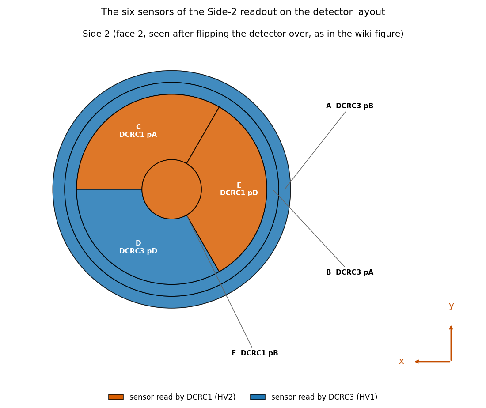
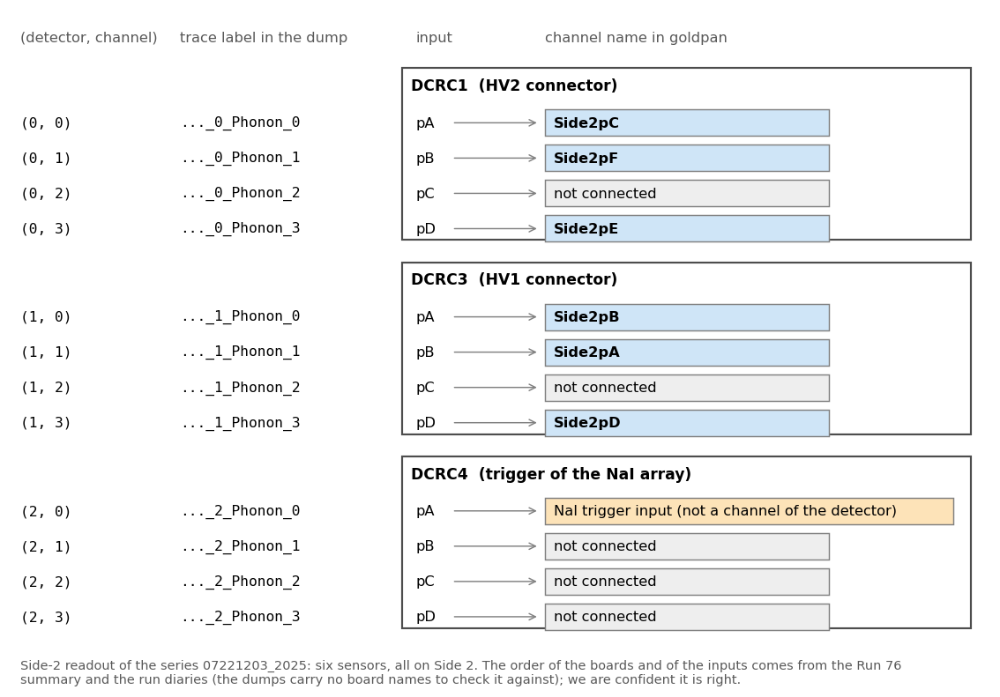
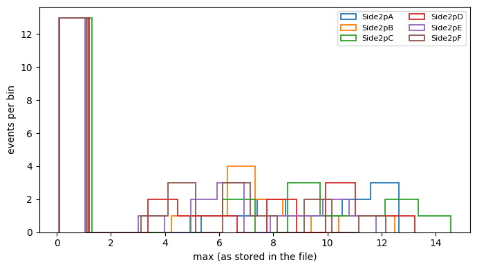
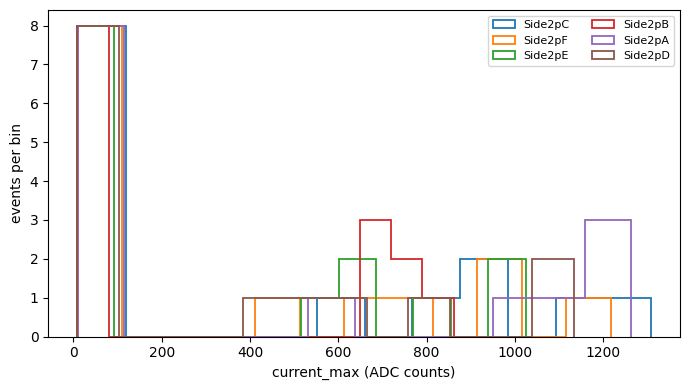
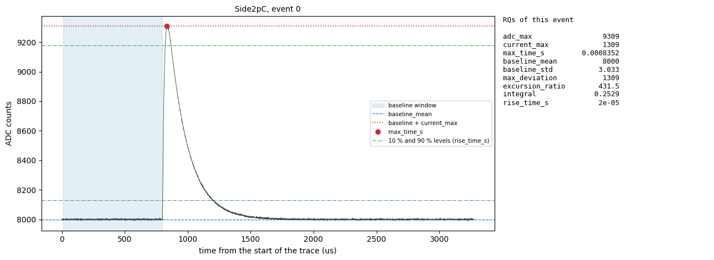
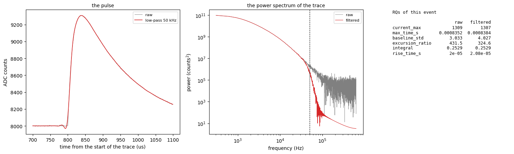

goldpan and goldsluice?The code is in the NSDF-Data
repository: python/ is goldpan,
goldsluice/ is goldsluice,
registry/ is the detector registry (Appendix A), and the
notebooks are in
data_analysis/R76/notebooks/goldpan-goldsluice/. The
notebooks of the section Examples run on made-up data saved
next to them, so they work on a fresh clone:
example-1-read-rqs-and-plot.ipynb:
read RQ files (ROOT) and plot one quantity.example-2-read-processed-quantities-and-plot.ipynb:
read the Parquet quantities of a goldsluice run and plot
one.example-3-trace-and-its-rqs.ipynb:
a trace next to its quantities, computed with
goldsluice.run, and the same after a low-pass filter.example-4-trace-and-its-processed-rqs.ipynb:
a trace next to its processed quantities, read from disk with
ds.read().Notebooks on the real Run 76 series 07221203_2025; the
processed files they read are the output of
python -m goldsluice run in
goldsluice/examples/ (in ~/goldsluice-output/)
and are not in the repository:
rq-histogram-goldpan.ipynb:
reads the RQs from ROOT files, histograms one, and plots the RQs over
the pulses (on synthetic files saved next to it, no raw data
needed).goldsluice-processed-plots.ipynb:
the Parquet dataset of the first goldsluice run (30 dumps,
81,992 events, six phonon channels): distributions, correlations between
channels, and the trend from dump to dump.goldsluice-root-rqs.ipynb:
the same run written as ROOT files in the layout of the collaboration’s
RQ files, with the structure of the files drawn.goldsluice-all-rqs-plots.ipynb:
all nine quantities of the six-algorithm run, for the six channels.The links are pinned to the commit that produced each notebook: they
show it as it was then, which may be older than the latest version, and
the files may have moved since (see
data_analysis/README.md).
Setup. goldpan and
goldsluice come with the repository: follow the setup
guide (it installs the packages with
pip install -r requirements.txt) and the first-analysis
guide.
The datasets of this note. One real series,
07221203_2025, and what is made from it, and some made-up
data that is saved in the repository so that the examples run on a fresh
clone:
| dataset | what it is | where | used in |
|---|---|---|---|
| Run 76 raw dumps | the series 07221203_2025 of Run 76: 30 dumps (idx
format), 81,992 events, 1.9 GB; Side-2 readout, detector
NAI-S2, six phonon channels Side2pA to
Side2pF |
~/idx/07221203_2025_F0001 to _F0030,
downloaded from NSDF (below) |
Reading data and doing a simple analysis, Processing the downloaded data |
goldsluice quantities, Parquet |
the quantities that goldsluice made from the raw dumps
(30 files, nine per channel); not in the repository |
~/goldsluice-output/r76-07221203/NAI-S2/, made by
python -m goldsluice run r76-registry.dataset.toml in
goldsluice/examples/ |
Processing the downloaded data, Example 2 |
goldsluice quantities, ROOT RQ files |
the same series written as ROOT files in the layout of the
collaboration’s RQ files, from an earlier run with two algorithms
(peak and max_time, three quantities per
channel); not in the repository |
~/goldsluice-output/r76-07221203/ |
Cached reading of the quantities |
| synthetic RQ files (ROOT) | two small files, 24 made-up events | data_analysis/R76/notebooks/goldpan-goldsluice/synthetic-rq/ |
Example 1 |
synthetic traces (goldpan Parquet) |
the traces of 14 made-up events, six sensors, 4096 samples | .../synthetic-goldpan/ |
Example 3, Example 4 |
| synthetic quantities (Parquet) | what goldsluice made from the synthetic traces, with
the definition file synthetic.dataset.toml that names
both |
.../synthetic-quantities/ |
Example 2, Example 4 |
Getting the raw data. The raw dumps are not in the
repository; they are fetched from the NSDF servers with
nsdf-cli. Go to your home folder first: the download makes
an idx folder in the folder you are in, and it must not sit
inside NSDF-Data.
cd ~
nsdf-cli download 07221203_2025_F0001That is one dump (about 34 MB), enough for the first section. The whole series, 30 dumps and about 1.9 GB, is
nsdf-cli download 07221203_2025 --alland nsdf-cli config --output-global ~/idx makes every
later download go to ~/idx whichever folder you are in.
Both guides above say more.
The quantities. Which series, dump, detector and
channel is used is stated where it is used. The quantities are the
outputs of the algorithms of goldsluice:
python -m goldsluice algorithms lists them, and Example 3
shows what each one measures on a trace.
What are the packages goldpan and
goldsluice? These are data analysis programs that are made
to analyze processed data and to process pulse data respectively.
goldsluice might take in some raw pulses and integrate
them, saving the values of the integrals into a file. Those values are
sometimes called Reduced Quantities (RQs) and they are in turn analyzed
and/or manipulated with goldpan to get science results. Any
generic function for fetching or manipulating data would go in these
programs, rather than sitting in multiple people’s analysis codes. The
names were chosen with the help of AI because we want to discover
something valuable in the data, one program takes a huge chunk of raw
data and makes it manageable (goldsluice) and one sifts
through very carefully for the key science (goldpan).
goldpanA dataset definition file tells goldpan where
the data are and how to read them: the source (the raw files, their
format and the detector they came from), and, through the detector
registry, the readout of that detector (sample period, trigger position,
channel names). Nothing about the electronics is assumed in the code.
Dataset.open reads the file; no data are read until we ask
for them.
The file used here is
goldsluice/examples/r76-registry.dataset.toml.
A copy as of this note (the registry and
glob paths and the output folder are the ones to
change):
# The same dataset as r76.dataset.toml, with the detector described in the registry (../../registry) instead of in this file:
# the readout, the channel map and the roles come from the record of "NAI-S2", and root_detector from its `number`.
# Everything written here wins over the registry, key by key. `python -m goldsluice check r76-registry.dataset.toml` lists the files.
[dataset]
name = "r76-07221203"
output = "~/goldsluice-output/r76-07221203"
registry = ["../../registry"] # folders of detector records, relative to this file (goldpan.registry); also GOLDPAN_REGISTRY
# output_format = "root" # for ROOT output the zip<N> number is the record's `number`: no root_detector needed
[[sources]]
name = "side2"
format = "idx"
glob = "~/idx/07221203_2025_F*"
detector = "NAI-S2" # in the registry: it supplies readout = "DCRC_RUN76" and the idx channels and roles
[[processing]]
algorithm = "peak"
channels = "role:phonon"
[processing.params]
glitch_samples = "@readout.glitch_samples"
pretrigger_samples = "@readout.pretrigger_samples"
amps_per_adc = 1.0 # PLACEHOLDER: current_max is in ADC counts until the ADC-to-amps scale is known
[[processing]]
algorithm = "max_time"
channels = "role:phonon"
[processing.params]
sample_period_s = "@readout.sample_period_s"from goldpan.dataset import Dataset
ds = Dataset.open("goldsluice/examples/r76-registry.dataset.toml")
ev = next(ds.iter_events(processed=False)) # the pulses of the first raw dump, as one Eventsnext(ds.iter_events(processed=False)) do?
ds.iter_events(...) returns a generator. It goes through
the raw files of the dataset’s source one at a time (30 here), reads
each with the adapter for its format (idx) and gives back
an Events with the pulses, the event keys
(series, dump, event) and the
trigger type. Nothing is read until the next item is asked for.
processed=False says that only the pulses are wanted.
The default, True, also reads the processed quantities from
the goldsluice output and attaches them to each event, and
fails if the batch run did not cover the file.next(...) advances the generator once, so only the
first file (07221203_2025_F0001) is read. A loop
for ev in ds.iter_events(...) would read all 30 files, one
after the other, and never hold more than one in memory.The lines registry = [...] and
detector = "NAI-S2" hand the description of the detector
(its channels, their roles and the readout) to the registry, which is
explained, with a copy of its files, in Appendix A.
For the Run 76 series 07221203_2025 this is the first of
30 raw files, 1,517 events and six phonon channels (Side2pA
to Side2pF). ev.trace("Side2pC") is an array
with one row per event and one column per sample (4096 samples of 0.8
us). The traces are the raw ADC values: they are not
baseline-subtracted, and sit at about 3,200 counts for this channel. A
simple analysis is to subtract each event’s own baseline, take the
largest value above it and histogram that over the events, or to overlay
the largest pulses against ev.time_axis().
goldpan.operations.baseline_subtract does the subtraction:
it takes each event’s mean over the samples before the trigger
(cfg.pretrigger_samples, here 500), leaving out the first
ten, which can carry an electronics glitch.
The channel names say where a trace comes from. A name such as
Side2pC is the sensor pC on Side 2 of the
detector; Figure 1, the figure of Note 9, shows where the six sensors
are on the detector.

Figure 1: The six sensors of detector S104 on Side 2, the face that is read out in this series (as seen after flipping the detector over; figure of Note 9). Each region is coloured by its readout board, DCRC1 (orange) or DCRC3 (blue), and labelled with its letter, its board and input.
The raw dump labels a trace only by two small integers,
<event>_<detector>_Phonon_<n>. In Run 76
the three “detectors” 0, 1 and 2 are not detectors but three four-input
readout boards (DCRC1, DCRC3 and DCRC4) of one detector, and
n is the input of the board, pA to
pD. Figure 2 shows how the dump’s labels map to the channel
names. Only six of the twelve inputs are sensors, one is the trigger
signal of the NaI array and five are not connected, so
goldpan has six channels for this series.

Figure 2: From the dump’s trace labels to the channel names
of the Side-2 readout. Each box is a readout board and each row
one of its four inputs. The blue rows are the six sensors,
Side2pA to Side2pF. The orange row is the
input of the NaI array’s trigger signal, which is not a channel of the
detector, and the grey rows are not connected (their signal never
changes). The order of the boards and of the inputs comes from the Run
76 summary and the run diaries. The dumps carry no board names to check
it against, so the registry marks it inferred, but we are
confident it is right.
The names are defined in the registry, in
registry/run76.toml (Appendix A), as a pair
[detector, channel] for each name:
Side2pC = [0, 0] is channel 0 of detector 0. A dataset
definition picks that up with detector = "NAI-S2", and a
channels table written in the definition file itself wins
over the registry. goldpan.channels holds a second copy of
the same map, from the setup table of the Run 76 summary; it is marked
under development, and a test checks that the registry agrees with
it.
from goldpan import operations
cfg = ev.detector.readout.segments[0].config # the readout: sample period, trigger sample, glitch samples
trace = ev.trace("Side2pC") # raw ADC counts, (events, samples)
pulse = operations.baseline_subtract(trace, cfg) # each event minus its own mean before the trigger
peak = pulse[:, cfg.glitch_samples:].max(axis=1) # the largest value above the baseline, per eventIn the first dump the median peak of Side2pC is 6 ADC
counts and the largest is 411. Reading the traces is the slow
part, and it is not cached. iter_events reads the
raw dump from disk every time you call it: about 3 seconds for this one
dump. Only the processed quantities are cached (see below). So read the
traces of one dump to look at pulses, and leave the pass over all the
data to goldsluice. The cost is per dump: the raw reader
cannot fetch single traces from the file, so looking at a few events
still reads their whole dump (about 3 seconds). Afterwards you can keep
just those events, by position or by event number:
ev.select([12, 345]) # the events at positions 12 and 345 of this dump
few = ev.select(ev.quantities["event"].to_numpy() == 10003) # the event with number 10003 (event numbers restart in every dump)
few.trace("Side2pC") # (events kept, samples)ds.read()?
ds.read() reads every file of the source and joins them
into one Events, so everything is in memory at once. For
all 30 dumps that is 82,000 events with six 4096-sample traces each,
read from disk again every time, with no caching.
iter_events gives the same data one file at a time, so a
loop over it can compute what it needs from each dump and let it go.
goldsluice and reading it back in
goldpangoldsluice reads the same dataset definition file, runs
its [[processing]] steps over every raw dump and writes the
results outside the repository (e.g. ~/goldsluice-output/).
Here the steps are peak (the largest value above the
baseline, current_max, and the largest ADC value,
adc_max) and max_time (the time of that
maximum, max_time_s), on the six phonon channels. It is run
from a terminal, in goldsluice/examples/; reading the raw
dumps takes a couple of minutes and is most of the time.
python -m goldsluice check r76-registry.dataset.toml # lists the raw files and the steps, reads nothing
python -m goldsluice run r76-registry.dataset.toml # processes every dumpThe output is a goldpan Parquet dataset, one file per
dump (output_format = "root" in the definition gives ROOT
files in the layout of the SuperCDMS collaboration’s RQ files instead).
Reading it back needs no raw data:
q = ds.processed() # the processed quantities of all dumps, no pulses: small and fast
q.quantities["Side2pC"]["current_max"] # a record per channel, a field per quantityThis is 81,992 events with three quantities for each of the six
channels. current_max is still in ADC counts because the
conversion to amps (amps_per_adc) is a placeholder equal to
1 until the scale is known. For the RQ-file layout there is a cached
reader, goldpan.rqdata.load, described in the next
section.
There is a second way to read the quantities,
goldpan.rqdata.load, which reads RQ files (the format of
the collaboration’s processed files) as numpy arrays and keeps what it
read in a cache, ~/.cache/goldpan/rqdata.
goldsluice can write its quantities as such files
(output_format = "root" in the definition), or
goldpan.adapters.rq_root.write can write the Parquet
quantities of the previous section as RQ files, one per dump with a
branch <channel>_<quantity> for each. The
quantities are chosen with patterns, where P* stands for
the six sensors (it is only a shorthand in the request, not part of a
branch name). The files of the run so far (peak and
max_time) have these 18 branches in the tree
rqDir/zip1, and rqDir/eventTree has
SeriesNumber, DumpNumber and
EventNumber:
| channel | adc_max |
current_max |
max_time_s |
|---|---|---|---|
| Side2pA | Side2pA_adc_max |
Side2pA_current_max |
Side2pA_max_time_s |
| Side2pB | Side2pB_adc_max |
Side2pB_current_max |
Side2pB_max_time_s |
| Side2pC | Side2pC_adc_max |
Side2pC_current_max |
Side2pC_max_time_s |
| Side2pD | Side2pD_adc_max |
Side2pD_current_max |
Side2pD_max_time_s |
| Side2pE | Side2pE_adc_max |
Side2pE_current_max |
Side2pE_max_time_s |
| Side2pF | Side2pF_adc_max |
Side2pF_current_max |
Side2pF_max_time_s |
A request is a list of such patterns:
from goldpan import rqdata
RQS = ["P*_adc_max", "P*_current_max", "P*_max_time_s"]
where = dict(detector=N, files=str(RQ_DIR / "{series}_F*.root"), phonon_channels=sensors, all_files=True)
data = rqdata.load("07221203_2025", RQS, **where) # first time: reads the 30 files
data = rqdata.load("07221203_2025", RQS, **where) # second time: from the cache
data["Side2pA_current_max"] # a numpy array, one number per eventFor the 30 files (81,992 events, 18 branches) the first read took 4.0
seconds and the second 0.1 seconds. Asking for fewer quantities than a
cached read has (["P*_current_max"]) is also served from
the cache, and a file that is rewritten is read again, never served
stale. rqdata.cache_info() lists the entries (here 2
entries, 37 MB) and rqdata.cache_clear() removes them.
This is not the same reader as Dataset and
ds.processed(): it returns flat arrays and not an
Events, it takes patterns for the quantities, which the
other reader does not, and it reads ROOT files only (the Parquet
quantities are read by ds.processed(), which has no cache,
so no reader at the moment both reads Parquet and caches). Whether there
should be two ways of reading, and where the cache belongs, is an open
question for the development (issue
177). The raw traces are not cached by either.
Each example is a short notebook with one goal, and runs on a fresh
clone. The links are pinned to the commit that produced them, so they
show the notebooks as they were then; the file may have moved or changed
since (see data_analysis/README.md).
You have RQ files, the reduced quantities of a series with one ROOT
file per dump, and how they were made does not matter. example-1-read-rqs-and-plot.ipynb
reads them with goldpan.adapters.rq_root.read, prints the
names of the fields, and histograms one quantity for all six channels.
It uses the small synthetic files saved next to it; for your own files
you change the folder and the detector number in one cell.

Figure 3: The distribution of the RQ max for the
six channels, from the notebook of Example 1. The data are the
24 made-up events of the synthetic files, so the shape means nothing: 13
events have no pulse (a value near 0) in every channel and the rest are
spread between 3 and 15. With real files the same cell draws the
distribution of a real quantity.
goldsluice run and
want a plotgoldsluice has processed some pulses and written the
quantities as a goldpan Parquet dataset. example-2-read-processed-quantities-and-plot.ipynb
opens the dataset definition file with Dataset.open, reads
the quantities with ds.processed() and histograms one of
them for the six channels. The folder synthetic-quantities/
next to it has the definition file and the quantities that came out of
it (made-up traces, 14 events, all six algorithms), so it runs on a
fresh clone; for your own run you point it at your definition file.

Figure 4: The distribution of the quantity
current_max for the six channels, from the
notebook of Example 2. The data are the 14 made-up events of the
synthetic traces, so the shape means nothing: 8 events have no pulse in
every channel and the rest have pulses of 400 to 1,300 ADC counts.
The quantities are short descriptions of a trace, so the natural
check is to draw the trace and mark what they say on it. example-3-trace-and-its-rqs.ipynb
reads the traces with adapters.read, computes the
quantities of one channel on the spot with goldsluice.run
(one call for each of the six algorithms, with the pretrigger window and
the sample period taken from the data’s readout), and draws the trace of
the event with the largest pulse next to a table of its quantities.
Nothing is read from a processed file. It uses the made-up traces in
synthetic-goldpan/; a raw dump is read the same way.

Figure 5: A trace and its quantities. The channel
Side2pC of the event with the largest pulse in the
synthetic dump (made-up data). Left: the trace, the baseline window
(shaded), baseline_mean (dashed), the level
baseline_mean + current_max (dotted), the sample at
max_time_s (dot) and the 10 % and 90 % levels between which
rise_time_s is measured (thin lines). Right: the nine
quantities of the event.
The notebook goes on to the case where the pulses are filtered before
the quantities are taken. goldpan.algorithms.lowpass is a
zero-phase low-pass filter (the pulse is not shifted in time), and
goldpan.quantities.power_spectrum with
frequencies_hz gives the spectrum. The same six algorithms
are run on the raw and on the filtered traces
(goldsluice.run only needs an array of shape (events,
samples)), so the quantities can be compared.

Figure 6: The same pulse before and after a 50 kHz
low-pass (made-up data). Left: the pulse, raw and filtered.
Middle: the power spectrum of the baseline-subtracted trace; everything
above the dashed line is cut. Right: the quantities of the event. The
pulse height, its time and its integral hardly change. Away from the
pulse the noise of the trace falls from 3.0 to 0.8 counts, but
baseline_std over the baseline window goes up (3.0 to 4.0):
a zero-phase filter spreads the sharp rise backward in time, into the
end of the window. Whether and how to filter is part of the definition
of a quantity.
The same picture as Example 3, when goldsluice has
already processed the pulses and written the quantities. example-4-trace-and-its-processed-rqs.ipynb
opens the definition file and calls ds.read(), which reads
the traces and the processed quantities of the same events together as
one Events; the quantities are then read and not computed.
The pair is synthetic-goldpan/ and
synthetic-quantities/out/ of Examples 2 and 3. Its figure
is Figure 5 again, with the same numbers, which is the check that the
processed quantities are those that the algorithms give.
More examples will follow, each for one question.
The dataset definition file above does not say how the detector is
wired or how its traces are sampled. That is data about the detector,
not code, so it lives in the registry/ folder of the
repository, in TOML files read by goldpan.registry. Nothing
in goldpan or goldsluice contains it. The
folder is laid out so that it can later become a repository of its own,
or a database behind the same interface (issue
150, “Readouts, detectors and channel maps in a registry, not in
code”).
run76.toml) has the
detector’s name (NAI-S2), its number (the N of
the zip<N> tree in ROOT output), the name of its
readout, and, for each file format, where each named channel is wired
and what role it has. For the idx dumps a channel is a pair
[board, input], so Side2pC = [0, 0] is input 0
of dump channel 0.readouts.toml) has
what is needed to interpret a trace: the sample period, the number of
samples before the trigger that are used as the baseline
(pretrigger_samples) and the number of samples at the start
of the trace that carry a glitch (glitch_samples).status, confirmed or
inferred, and an evidence text that says where
the numbers come from. A guess is never written as
confirmed. Both records here are inferred: the
idx dumps carry no detector name or number, so nothing can be checked
against a file.[dataset] registry = ["../../registry"] (relative to the
definition file), or the environment variable
GOLDPAN_REGISTRY lists folders. Anything the definition
file writes itself wins over the registry, key by key. A name may be
defined only once.A copy of the two files as of this note (the repository has the current ones):
registry/run76.toml
# The Run 76 detector (UMN, NaI array with Side-2 readout): the one the series 07221203_2025 was taken with.
# Read by goldpan.registry (`registry = ["../registry"]` in a dataset definition file). Not part of the library.
format_version = 1
[detectors."NAI-S2"]
number = 1 # the N of zip<N> in ROOT output: OUR choice for this detector; it is in no raw file (issue 150)
readout = "DCRC_RUN76" # see readouts.toml: 0.8 us per sample, 500-sample pretrigger window, 10 glitch samples
status = "inferred"
evidence = """The six sensors and their board inputs come from the Setup table of the Run 76 summary (Side-2 readout); that dump \
detectors 0, 1, 2 are DCRC1, DCRC3, DCRC4 (ascending board number) is inferred and channels 0 to 3 = inputs pA to pD is assumed: \
see goldpan.channels, which holds the same map and is marked under development. The detector number is our own choice (issue 150). \
The Run 76 idx dumps carry no detector name or number, so nothing here can be checked against a file."""
description = "Run 76 NaI array, Side-2 readout; DCRC4 pA is the NaI trigger input and is not a channel of this detector."
series = ["07221203_2025"]
[detectors."NAI-S2".idx] # defaults for [sources.read] of an idx source: channel name = [board, input]
channels = { Side2pC = [0, 0], Side2pF = [0, 1], Side2pE = [0, 3], Side2pB = [1, 0], Side2pA = [1, 1], Side2pD = [1, 3] }
roles = { Side2pC = "phonon", Side2pF = "phonon", Side2pE = "phonon", Side2pB = "phonon", Side2pA = "phonon", Side2pD = "phonon" }registry/readouts.toml
# The readouts (how a trace is sampled and where its baseline window ends) of the data we analyse. A detector record names one
# (`readout = "..."`). Read by goldpan.registry. Not part of the library; `goldpan.config` keeps the same two numbers as presets for
# old code, and a test checks that they agree with this file.
format_version = 1
[readouts.DCRC_RUN76]
pretrigger_samples = 500 # the end of the baseline window, and the sample where the trigger-locked pulses start: see evidence
glitch_samples = 10
sample_period_s = 0.8e-6
status = "inferred"
series = ["07221203_2025"]
description = "DCRC readout of the Run 76 series (UMN, Side-2 readout): 4096 samples at 0.8 us (1.25 MHz) is a trace of 3.2768 ms."
evidence = """sample_period_s: the first-pulse analysis of the Run 76 phonon channels, see 'The sample period' in python/README.md (we used \
1.6 us until 2026-10-22, which is the Z7 value). pretrigger_samples: measured on dumps F0005, F0015 and F0025 of 07221203_2025 \
(about 8,800 events, issue 154). The 90 % of the events whose trigger_type label is 'Unknown' have their pulse start at sample \
480 to 520 (the 10 % rise point is at sample 498, p10 to p90 480 to 510) and are flat before sample 470, so the pulse starts at \
about sample 500, not at the 1000 that this entry had until 2026-10-28. With 1000, the baseline of `peak` (the mean of samples \
10 to 1000) was about half pulse and `current_max` came out at 0.52 of its value; a baseline over samples 10 to 500 gives 0.999 \
of it. Note 2 compares the two windows and uses 500. The events labelled 'Physics' have pulses at random times. The numbers are \
the same on Side2pA, B and F. glitch_samples: see goldpan.config."""
[readouts.Z7]
pretrigger_samples = 6250
glitch_samples = 10
sample_period_s = 1.6e-6
status = "inferred"
description = "The Z7 readout (SNOLAB): a 6250-sample pretrigger window (10 ms), 1.6 us per sample (625 kHz)."
evidence = """Taken from the Z7 analysis of the collaboration's scdms-analysis-tools (a fixed 10 ms pretrigger window at 1.6 us per \
sample). NOT checked against a file: the begin-of-run ODB of series 24260424_145101 (Det07) gives a pre-trigger offset of 16383 \
samples (26.2 ms) and an on-pulse length of 32768 samples (52.4 ms), which is a different number; they may be different \
configurations. Confirm before using this entry for that series (issue 150)."""